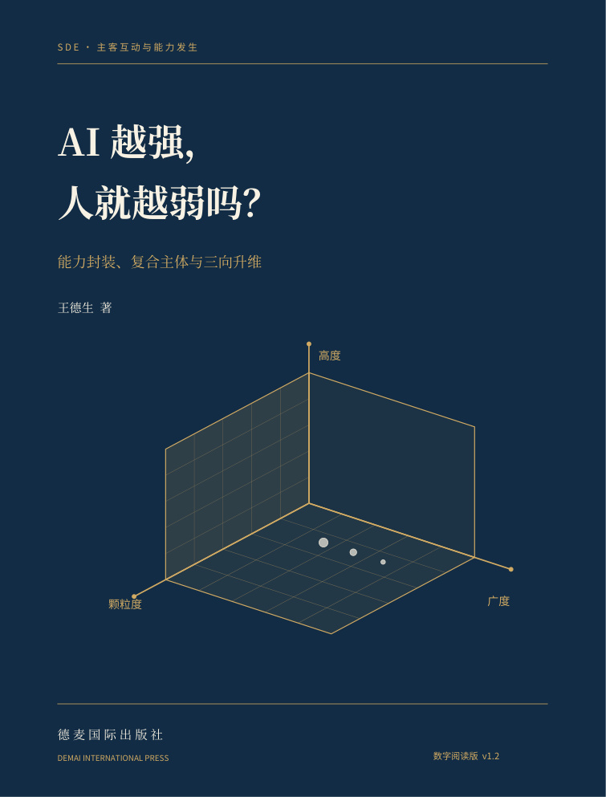

第一编 · 第 1—5 章
焦虑中的“我”，究竟被定义成了什么？
先分清任务表现、能力承担、个人学习与人的价值，再辨认焦虑中的推理。

工具并未让双腿成为发动机，却改变了我们能够组织的生活。AI承接认知过程之后，发生变化的能力属于谁？本书从能力封装和复合主体出发，沿广度、高度、颗粒度辨认新能力，解除不成立的自我否定，同时正视学习、可靠性、依赖与收益分配的真实问题。
当复合体取得的成果被记到自然人名下，工具的参与就可能先被解释为“赋能”，又被解释为“掏空”。需要改变的，不只是对技术的态度，还有能力归属的方式。
不必证明自己胜过机器，
才能拥有一个值得过的人生。
能进入哪些活动，连接哪些原来无法连接的领域？
哪些执行过程成为新的组织与能力发生的条件？
什么能够被辨认、处理和调用为一个整体单位？
先分清任务表现、能力承担、个人学习与人的价值，再辨认焦虑中的推理。
从器具到认知过程，追查复杂功能怎样成为可以调用的稳定整体。
从实际互动划定能力边界，而不把“人＋工具”直接当作主体已经发生。
广度、高度与颗粒度分别辨认，既观察联动，也检查不同步与失败。
保留感受的真实性，拆开“过程被承接”与“我失去价值”之间的跳跃。
可靠性、学习、依赖与分配问题不能被概念澄清代替，必须改变实际条件。
从一个真实问题出发，以记录、试行和反馈检验新的复合能力是否发生。
教育、科研、工作与生活各有自己的任务：能力发生应当打开有意义的生活。